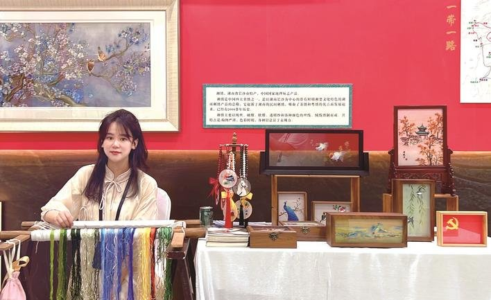
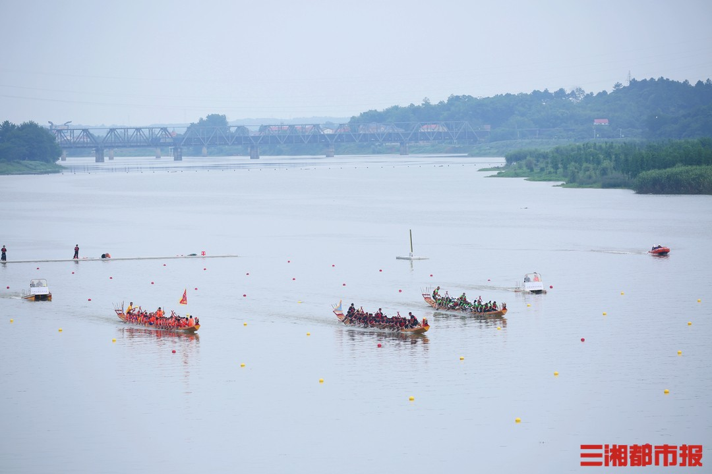

非遗焕新 —— 湘绣跨界联名文创出圈
非遗湘绣打破传统印象，与潮流品牌推出联名文创产品。从刺绣笔记本到国风服饰纹样，老手艺碰撞新审美，吸引年轻群体打卡收藏。这一现象也引发 “非遗如何活在当下” 的热议，看千年湘绣如何以创新姿态融入现代生活。
2025年10月21日

端午溯源 —— 汨罗江畔的千年龙舟传承
作为端午习俗的重要发源地，汨罗江畔每年都会举办盛大的龙舟竞渡活动。除了紧张刺激的比赛，更有祭龙仪式、端午诗会等特色环节。聚焦当代龙舟赛里的文化传承，感受湖湘儿女延续千年的家国情怀与拼搏精神。
2025年10月21日